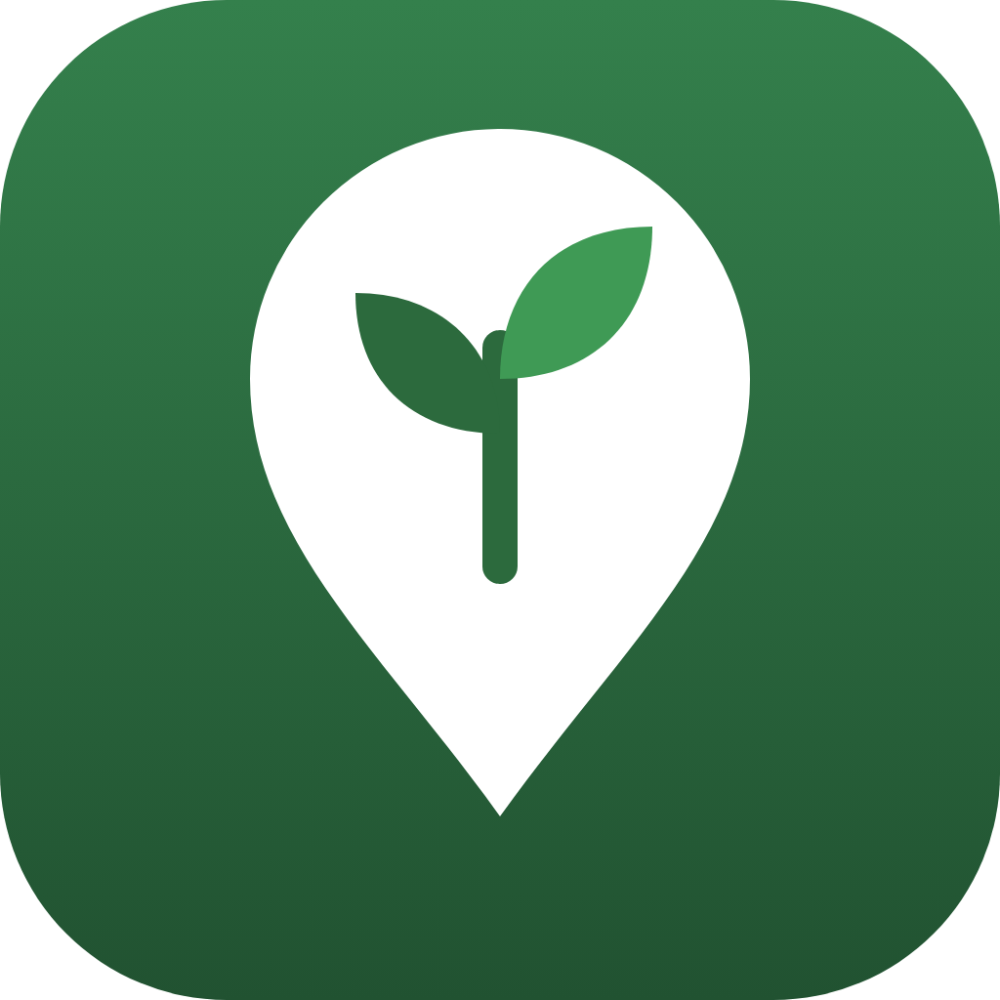
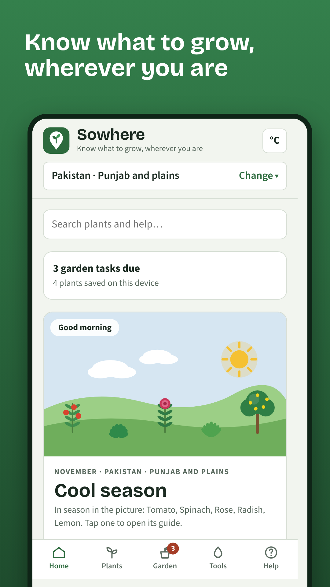
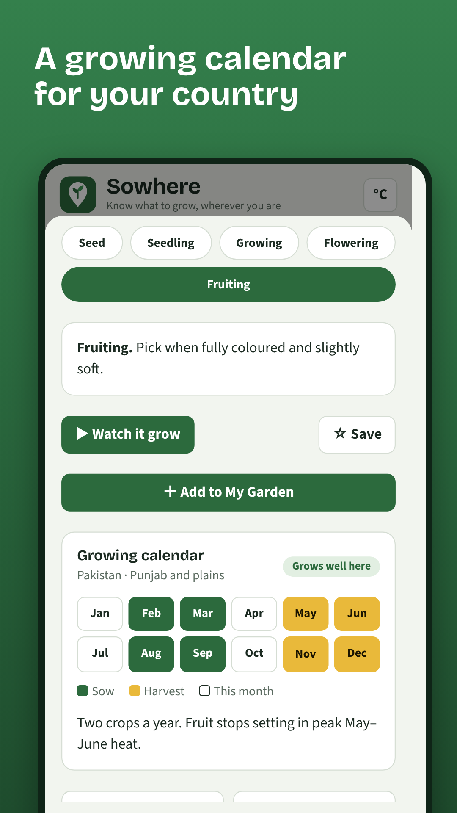
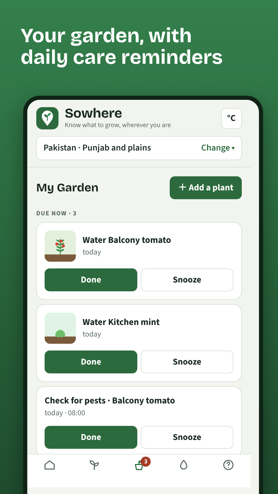

SowhereSowhere is a free Android gardening app. It shows what to sow, plant and harvest each month in your country, and reminds you to care for the plants in your own garden. No account, and nothing leaves your phone.
Get it on Google Play


| Platform | Android 7.0 and newer |
|---|---|
| Price | Free, no ads, no in-app purchases |
| Plants | 80: 26 vegetables, 23 fruits, 14 flowers, 13 herbs, 4 succulents |
| Coverage | 215 countries and regions in six climate groups |
| Data collected | None |
| Permissions | Notifications |
A free Android gardening app that tells you what to grow each month where you live, with grow guides for 80 plants and care reminders for your own garden.
215 countries and regions. Each is matched to one of six climate groups, and Southern Hemisphere calendars are shifted by six months. Advice is a starting point; local conditions in your city may differ.
No. There is no account and no server. Plants and reminders are stored only on your phone.
Yes. Guides, calendars and reminders all work without an internet connection.
Yes, with no ads and no in-app purchases.